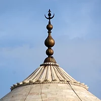

The Taj Mahal is an Islamic ivory-white marble mausoleum on the right bank of the river Yamuna in the Indian city of Agra. It was commissioned in 1632 by the Mughal emperor Shah Jahan (r. 1628–1658) to house the tomb of his favourite wife, Mumtaz Mahal; it also houses the tomb of Shah Jahan himself. The tomb is the centrepiece of a 17-hectare (42-acre) complex, which includes a mosque and a guest house, and is set in formal gardens bounded on three sides by a crenellated wall.
Construction of the mausoleum was essentially completed in 1643, but work continued on other phases of the project for another 10 years. The Taj Mahal complex is believed to have been completed in its entirety in 1653 at a cost estimated at the time to be around ₹32 million, which in 2020 would be approximately ₹70 billion (about US $1 billion). The construction project employed some 20,000 artisans under the uidance of a board of architects led by the court architect to the emperor, Ustad Ahmad Lahauri. Various types of symbolism have been employed in the Taj to reflect natural beauty and divinity.
The Taj Mahal was designated as a UNESCO World Heritage Site in 1983 for being "the jewel of Muslim art in India and one of the universally admired masterpieces of the world's heritage". It is regarded by many as the best example of Mughal architecture and a symbol of India's rich history. The Taj Mahal attracts more than 6 million visitors a year[3] and in 2007, it was declared a winner of the New 7 Wonders of the World (2000–2007) initiative.
The Taj Mahal was commissioned by Shah Jahan in 1631, to be built in the memory of his wife Mumtaz Mahal, who died on 17 June that year, while giving birth to their 14th child, Gauhara Begum.[12][13] Construction started in 1632,[14] and the mausoleum was completed in 1648, while the surrounding buildings and garden were finished five years later.[15] The imperial court documenting Shah Jahan's grief after the death of Mumtaz Mahal illustrates the love story held as the inspiration for the Taj Mahal.[16]
The Taj Mahal incorporates and expands on design traditions of Indo-Islamic and earlier Mughal architecture. Specific inspiration came from successful Timurid and Mughal buildings including the Gur-e Amir (the tomb of Timur, progenitor of the Mughal dynasty, in Samarkand),[17] Humayun's Tomb which inspired the Charbagh gardens and hasht-behesht (architecture) plan of the site, Itmad-Ud-Daulah's Tomb (sometimes called the Baby Taj), and Shah Jahan's own Jama Masjid in Delhi. While earlier Mughal buildings were primarily constructed of red sandstone, Shah Jahan promoted the use of white marble inlaid with semi-precious stones. Buildings under his patronage reached new levels of refinement
The exterior decorations of the Taj Mahal are among the finest in Mughal architecture. As the surface area changes, the decorations are refined proportionally. The decorative elements were created by applying paint, stucco, stone inlays or carvings. In line with the Islamic prohibition against the use of anthropomorphic forms, the decorative elements can be grouped into either calligraphy, abstract forms or vegetative motifs. Throughout the complex are passages from the Qur'an that comprise some of the decorative elements. Recent scholarship suggests that Amanat Khan chose the passages.
The calligraphy on the Great Gate reads "O Soul, thou art at rest. Return to the Lord at peace with Him, and He at peace with you."[28] The calligraphy was created in 1609 by a calligrapher named Abdul Haq. Shah Jahan conferred the title of "Amanat Khan" upon him as a reward for his "dazzling virtuosity".[29] Near the lines from the Qur'an at the base of the interior dome is the inscription, "Written by the insignificant being, Amanat Khan Shirazi."[30] Much of the calligraphy is composed of florid thuluth script made of jasper or black marble[29] inlaid in white marble panels. Higher panels are written in slightly larger script to reduce the skewing effect when viewed from below. The calligraphy found on the marble cenotaphs in the tomb is particularly detailed and delicate
Abstract forms are used throughout, especially in the plinth, minarets, gateway, mosque, jawab and, to a lesser extent, on the surfaces of the tomb. The domes and vaults of the sandstone buildings are worked with tracery of incised painting to create elaborate geometric forms. Herringbone inlays define the space between many of the adjoining elements. White inlays are used in sandstone buildings, and dark or black inlays on the white marbles. Mortared areas of the marble buildings have been stained or painted in a contrasting colour which creates a complex array of geometric patterns. Floors and walkways use contrasting tiles or blocks in tessellation patterns.[31]
n the lower walls of the tomb are white marble dados sculpted with realistic bas relief depictions of flowers and vines. The marble has been polished to emphasise the exquisite detailing of the carvings. The dado frames and archway spandrels have been decorated with pietra dura inlays of highly stylised, almost geometric vines, flowers and fruits. The inlay stones are of yellow marble, jasper and jade, polished and levelled to the surface of the walls
Finial, tamga of the Mughal Empire.
Go to this website for your booking : Book now